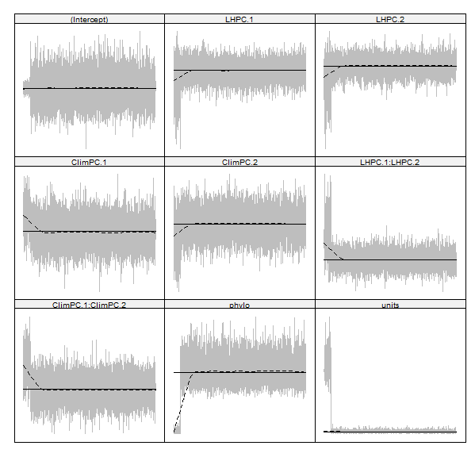

data_model%>%glimpse()
library(MCMCglmm)
library(MuMIn)
Clim123<-MCMCglmm(Cumulative_SigElas~LHPC.1 * LHPC.2 + ClimPC.1 * ClimPC.2 * ClimPC.3,
random=~phylo,family="gaussian",
ginverse=list(phylo=inverseA(subtree_Plants,nodes="TIPS",scale=TRUE)$Ainv),
prior=prior_phylo,data=subset(data_model,Kingdom=="Plantae"),
nitt=nitt,burnin=burnin,thin=thin,singular.ok=TRUE, scale = glmmScale)
Clim12<-MCMCglmm(Cumulative_SigElas~LHPC.1 * LHPC.2 + ClimPC.1 * ClimPC.2 ,
random=~phylo,family="gaussian",
ginverse=list(phylo=inverseA(subtree_Plants,nodes="TIPS",scale=TRUE)$Ainv),
prior=prior_phylo,data=subset(data_model,Kingdom=="Plantae"),
nitt=nitt,burnin=burnin,thin=thin,singular.ok=TRUE, scale = glmmScale)
Clim13<-MCMCglmm(Cumulative_SigElas~LHPC.1 * LHPC.2 + ClimPC.1 * ClimPC.3 ,
random=~phylo,family="gaussian",
ginverse=list(phylo=inverseA(subtree_Plants,nodes="TIPS",scale=TRUE)$Ainv),
prior=prior_phylo,data=subset(data_model,Kingdom=="Plantae"),
nitt=nitt,burnin=burnin,thin=thin,singular.ok=TRUE, scale = glmmScale)
Clim23<-MCMCglmm(Cumulative_SigElas~LHPC.1 * LHPC.2 + ClimPC.2 * ClimPC.3 ,
random=~phylo,family="gaussian",
ginverse=list(phylo=inverseA(subtree_Plants,nodes="TIPS",scale=TRUE)$Ainv),
prior=prior_phylo,data=subset(data_model,Kingdom=="Plantae"),
nitt=nitt,burnin=burnin,thin=thin,singular.ok=TRUE, scale = glmmScale)
Clim2<-MCMCglmm(Cumulative_SigElas~LHPC.1 * LHPC.2 + ClimPC.2,
random=~phylo,family="gaussian",
ginverse=list(phylo=inverseA(subtree_Plants,nodes="TIPS",scale=TRUE)$Ainv),
prior=prior_phylo,data=subset(data_model,Kingdom=="Plantae"),
nitt=nitt,burnin=burnin,thin=thin,singular.ok=TRUE, scale = glmmScale)
Clim1<-MCMCglmm(Cumulative_SigElas~LHPC.1 * LHPC.2 + ClimPC.1,
random=~phylo,family="gaussian",
ginverse=list(phylo=inverseA(subtree_Plants,nodes="TIPS",scale=TRUE)$Ainv),
prior=prior_phylo,data=subset(data_model,Kingdom=="Plantae"),
nitt=nitt,burnin=burnin,thin=thin,singular.ok=TRUE, scale = glmmScale)
Clim3<-MCMCglmm(Cumulative_SigElas~LHPC.1 * LHPC.2 + ClimPC.3,
random=~phylo,family="gaussian",
ginverse=list(phylo=inverseA(subtree_Plants,nodes="TIPS",scale=TRUE)$Ainv),
prior=prior_phylo,data=subset(data_model,Kingdom=="Plantae"),
nitt=nitt,burnin=burnin,thin=thin,singular.ok=TRUE, scale = glmmScale)
Clim123_plus<-MCMCglmm(Cumulative_SigElas~LHPC.1 * LHPC.2 + ClimPC.1 + ClimPC.2 + ClimPC.3,
random=~phylo,family="gaussian",
ginverse=list(phylo=inverseA(subtree_Plants,nodes="TIPS",scale=TRUE)$Ainv),
prior=prior_phylo,data=subset(data_model,Kingdom=="Plantae"),
nitt=nitt,burnin=burnin,thin=thin,singular.ok=TRUE, scale = glmmScale)
Clim12_plus<-MCMCglmm(Cumulative_SigElas~LHPC.1 * LHPC.2 + ClimPC.1 + ClimPC.2,
random=~phylo,family="gaussian",
ginverse=list(phylo=inverseA(subtree_Plants,nodes="TIPS",scale=TRUE)$Ainv),
prior=prior_phylo,data=subset(data_model,Kingdom=="Plantae"),
nitt=nitt,burnin=burnin,thin=thin,singular.ok=TRUE, scale = glmmScale)
Clim12_plus_only<-MCMCglmm(Cumulative_SigElas~LHPC.1 + LHPC.2 + ClimPC.1 + ClimPC.2,
random=~phylo,family="gaussian",
ginverse=list(phylo=inverseA(subtree_Plants,nodes="TIPS",scale=TRUE)$Ainv),
prior=prior_phylo,data=subset(data_model,Kingdom=="Plantae"),
nitt=nitt,burnin=burnin,thin=thin,singular.ok=TRUE, scale = glmmScale)Resultado preliminar MCMCglmm - Notas
Priori information & model settings
- prior_phylo<-list(G=list(G1=list(V=1,nu=0.02)), R=list(V=1,nu=0.02))
- nitt=100000; # Aumentei substancialmente!
- burnin=1000;
- thin=10 # Aumentei de 3 para 10 para aumentar o sample size
- glmmScale<-“FALSE”
Cria os modelos MCMCglmm (APENAS CUMULATIVE SIG CONSIDERADO!!!!)
Comparação dos modelos
- Precisa do pacote MuMIn para funcionar
library(MuMIn) # Necessário para comparar multiplos modelos com BIC, AIC e DIC
library(DT) #Tabela apresentávelforms<-lapply(
lapply(
list(Clim1,Clim2,Clim3,
Clim123,
Clim12,Clim13,Clim23,
Clim123_plus,Clim12_plus,
Clim12_plus_only),formula),
function(f) paste(deparse(formula(f)), collapse = ""))%>%do.call(rbind,.)
mod_out<-cbind(formulas=forms,
BIC(Clim1,Clim2,Clim3,Clim123,Clim12,Clim13,Clim23,Clim123_plus,Clim12_plus,Clim12_plus_only),
AIC=AIC(Clim1,Clim2,Clim3,Clim123,Clim12,Clim13,Clim23,Clim123_plus,Clim12_plus,Clim12_plus_only)[,2],
DIC=DIC(Clim1,Clim2,Clim3,Clim123,Clim12,Clim13,Clim2,Clim123_plus,Clim12_plus,Clim12_plus_only)[,2])%>%
arrange(DIC)mod_out%>%
dplyr::mutate(across(where(is.numeric), round, 1))%>%
datatable()Modelos Clim12 é o mais adequado! Depois dele o modelo considerando apenas variaveis aditivas!
| Modelo | formulas | df | BIC | AIC | DIC |
|---|---|---|---|---|---|
| Clim12 | Cumulative_SigElas ~ LHPC.1 * LHPC.2 + ClimPC.1 * ClimPC.2 | 9 | -384.98 | -410.14 | -404.16 |
| Clim12_plus_only | Cumulative_SigElas ~ LHPC.1 + LHPC.2 + ClimPC.1 + ClimPC.2 | 7 | -416.29 | -435.86 | -391.15 |
| Clim123_plus | Cumulative_SigElas ~ LHPC.1 * LHPC.2 + ClimPC.1 + ClimPC.2 + ClimPC.3 | 9 | -403.14 | -428.30 | -389.12 |
| Clim12_plus | Cumulative_SigElas ~ LHPC.1 * LHPC.2 + ClimPC.1 + ClimPC.2 | 8 | -411.97 | -434.34 | -379.77 |
| Clim2 | Cumulative_SigElas ~ LHPC.1 * LHPC.2 + ClimPC.2 | 7 | -421.21 | -440.78 | -376.24 |
| Clim23 | Cumulative_SigElas ~ LHPC.1 * LHPC.2 + ClimPC.2 * ClimPC.3 | 9 | -416.12 | -441.29 | -376.24 |
| Clim3 | Cumulative_SigElas ~ LHPC.1 * LHPC.2 + ClimPC.3 | 7 | -415.60 | -435.17 | -370.75 |
| Clim13 | Cumulative_SigElas ~ LHPC.1 * LHPC.2 + ClimPC.1 * ClimPC.3 | 9 | -400.42 | -425.58 | -367.66 |
| Clim123 | Cumulative_SigElas ~ LHPC.1 * LHPC.2 + ClimPC.1 * ClimPC.2 * ClimPC.3 | 13 | -385.14 | -421.48 | -366.14 |
| Clim1 | Cumulative_SigElas ~ LHPC.1 * LHPC.2 + ClimPC.1 | 7 | -384.56 | -404.13 | -340.15 |
Principais models e seus outputs:
Clim 123 - Modelo sugerido pelo revisor
- Posição: 9th pior modelo!
- Fórmula Cumulative_SigElas ~ LHPC.1 * LHPC.2 + ClimPC.1 * ClimPC.2 * ClimPC.3
- Apenas LHPC.1 é significativo e a interação LHPC1 x LHPC2 é marginalmente significativo
| post.mean | l-95% CI | u-95% CI | eff.samp | pMCMC | |
|---|---|---|---|---|---|
| (Intercept) | 0.053 | -0.294 | 0.401 | 8357.528 | 0.754 |
| LHPC.1 | -0.012 | -0.023 | -0.002 | 10369.741 | 0.022 * |
| LHPC.2 | -0.006 | -0.022 | 0.011 | 9900 | 0.498 |
| ClimPC.1 | 0.017 | -0.028 | 0.061 | 9900 | 0.464 |
| ClimPC.2 | -0.006 | -0.075 | 0.06 | 11514.187 | 0.849 |
| ClimPC.3 | 0.039 | -0.029 | 0.105 | 9900 | 0.262 |
| LHPC.1:LHPC.2 | 0.007 | -0.002 | 0.016 | 9531.462 | 0.094. |
| ClimPC.1:ClimPC.2 | 0.017 | -0.041 | 0.073 | 10245.923 | 0.561 |
| ClimPC.1:ClimPC.3 | -0.013 | -0.07 | 0.047 | 10169.172 | 0.652 |
| ClimPC.2:ClimPC.3 | 0.046 | -0.03 | 0.122 | 9900 | 0.235 |
Clim 12: Modelo inicial
- Melhor modelo (DIC = -404)
- Fórmula Cumulative_SigElas ~ LHPC.1 * LHPC.2 + ClimPC.1 * ClimPC.2
- Mantem a mesma discussão do artigo inicialmente
| post.mean | l-95% CI | u-95% CI | eff.samp | pMCMC | |
|---|---|---|---|---|---|
| (Intercept) | 0.065 | -0.279 | 0.409 | 9900 | 0.676 |
| LHPC.1 | -0.011 | -0.023 | 0 | 281.596 | 0.039 |
| LHPC.2 | -0.006 | -0.026 | 0.013 | 115.033 | 0.523 |
| ClimPC.1 | 0.018 | -0.017 | 0.054 | 563.049 | 0.318 |
| ClimPC.2 | 0.036 | 0.008 | 0.063 | 785.354 | 0.022 |
| LHPC.1:LHPC.2 | 0.007 | -0.005 | 0.018 | 45.735 | 0.174 |
| ClimPC.1:ClimPC.2 | 0.014 | -0.007 | 0.038 | 93.823 | 0.163 |
Traceplot Model Clim 12 is OK!
Below The traceplot for MCMCglmm model Clim 12 (Cumulative_SigElas ~ LHPC.1 * LHPC.2 + ClimPC.1 * ClimPC.2).
- Take home message: Model converge!
allChains <- mcmcr::as.mcmc(cbind(Clim12$Sol,Clim12$VCV))
plotMCMC::plotTrace(allChains)